When you first open CurrencyCam, the app will ask for camera permission. Tap "Allow" to enable real-time currency detection. The camera is used only for on-device text recognition — no images are stored or uploaded.
Aim the on-screen focus frame at any price tag, receipt, menu, or sign that shows an amount. CurrencyCam detects numbers inside the frame and shows the converted result at the bottom of the screen.
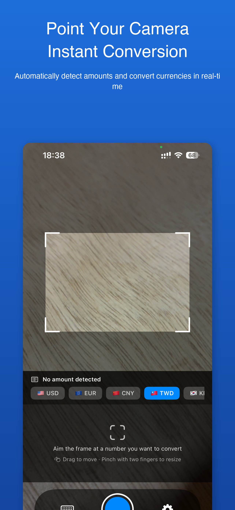
Drag the frame to reposition it, or pinch with two fingers to resize. Narrow the frame onto a single price so the app ignores unrelated numbers around it — perfect for crowded menus and receipts.
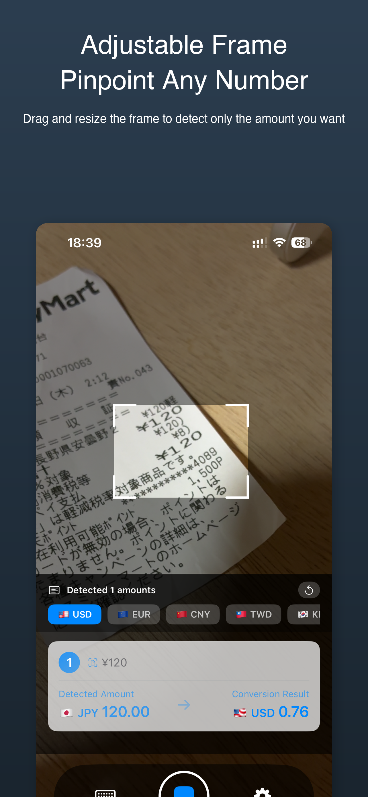
Tap the camera button (bottom center) to freeze the current view. You can examine the detection result without the camera updating. Tap again to resume live detection.
Tap the keyboard icon (top-left) to open manual input. Type in any amount using the system keyboard to instantly see conversions to all your target currencies — perfect when you can't point the camera at a price.
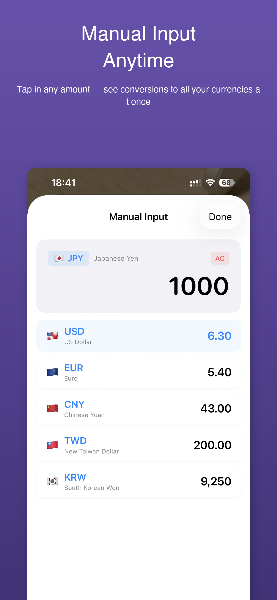
If you have multiple target currencies set up, use the currency tabs at the bottom of the main screen to quickly switch between them.
Tap the gear icon (⚙) in the top-right corner to open Settings. Here you can configure your source currency, target currencies, and exchange rates.
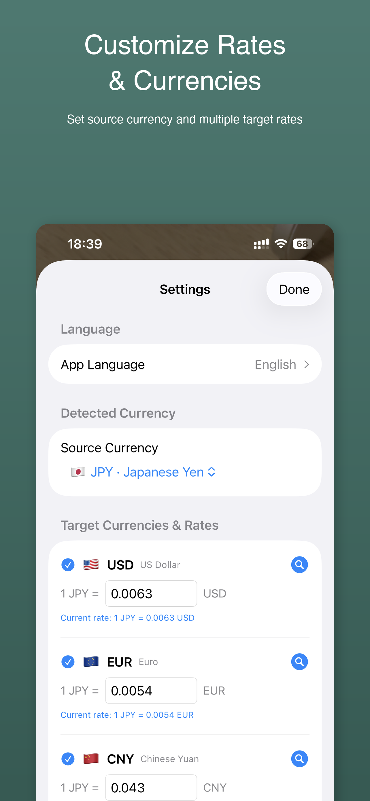
Under "Detected Currency", select the currency you expect to see through the camera. For example, if you're traveling in Japan, set it to JPY.
Tap "Add Currency" to open the picker. Currencies are grouped by region (Asia-Pacific, Oceania, Americas, Europe, Middle East & Africa) — tap to select multiple at once, use "Clear All" to reset, and search by name or code. Long-press on the list to reorder, or swipe left to remove.
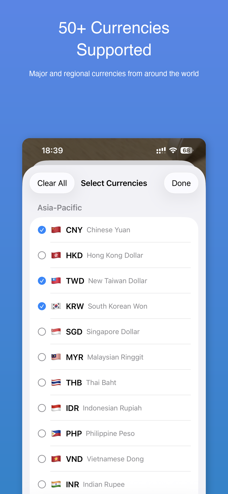
Each target currency has an editable rate field. Type in your own rate, or tap the magnifying glass icon to look up the current rate online.
Go to Settings > App Language to switch between English, Japanese, Korean, Simplified Chinese, Traditional Chinese, and Spanish.
Pro Tip: The app remembers your target currency selections per source currency. So when you switch from JPY to EUR as your source, your target currencies will change accordingly!
為替カメラを初めて開くと、カメラの使用許可を求められます。「許可」をタップして、リアルタイムの通貨検出を有効にしてください。カメラはデバイス上でのテキスト認識にのみ使用され、画像は保存・アップロードされません。
画面上の取景框を、値札・レシート・メニュー・看板など金額が表示されている部分に合わせます。取景框内の数字を自動的に検出し、画面下部に換算結果を表示します。
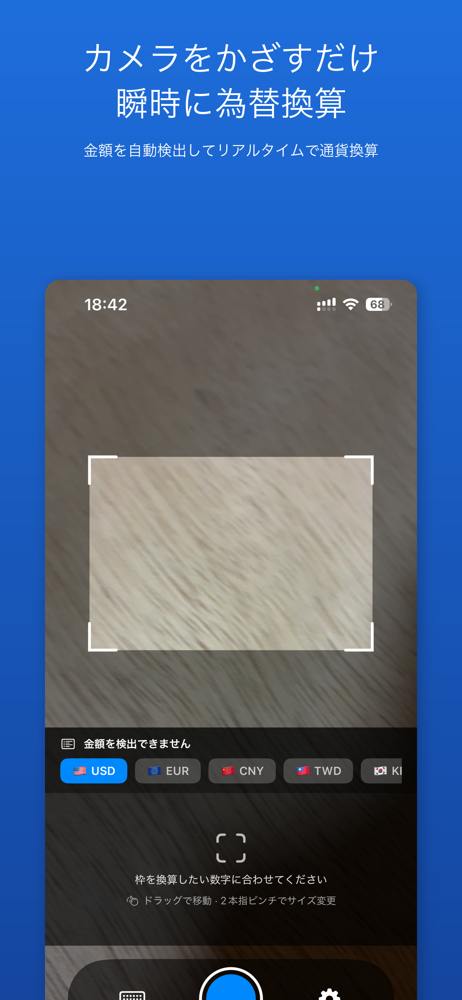
取景框をドラッグで移動、2本指のピンチで拡大・縮小できます。読み取りたい金額だけを枠内に収めれば、周囲の無関係な数字に邪魔されません。ごちゃごちゃしたメニューやレシートでも便利です。
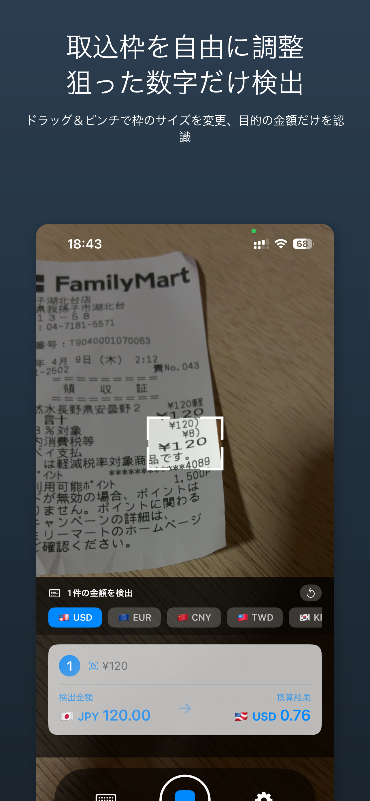
画面下部中央のカメラボタンをタップすると、映像を一時停止できます。検出された金額をじっくり確認できます。もう一度タップするとライブ検出が再開されます。
左上のキーボードアイコンをタップすると手動入力モードが開きます。システムキーボードで金額を入力すると、すべての目標通貨への換算結果が一覧表示されます。カメラを向けられない場面で便利です。
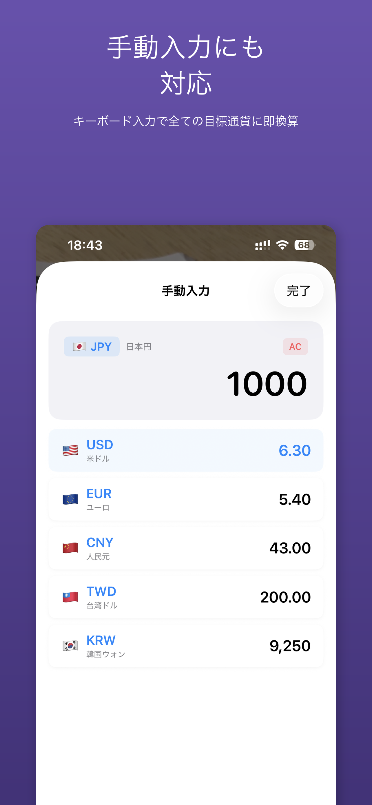
複数の目標通貨が設定されている場合、メイン画面の下部にある通貨タブをタップして素早く切り替えできます。
右上の歯車アイコン（⚙）をタップして設定を開きます。元通貨、目標通貨、為替レートを設定できます。
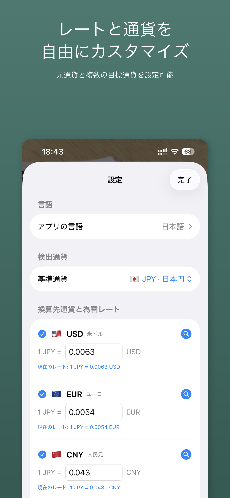
「検出通貨」セクションで、カメラで認識したい通貨を選択します。例えば、日本にいる場合はJPYに設定します。
「通貨を追加」をタップすると、通貨ピッカーが開きます。通貨はアジア太平洋・オセアニア・アメリカ・ヨーロッパ・中東＆アフリカ地域別にグループ表示され、タップで複数選択、「すべてクリア」で一括解除、名称やコードで検索もできます。リスト上で長押しすると並び替え、左スワイプで削除できます。
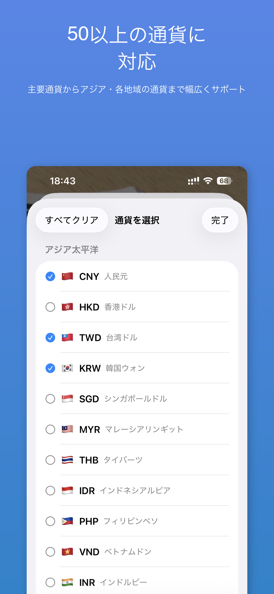
各目標通貨には編集可能なレート入力欄があります。独自のレートを入力するか、虫眼鏡アイコンをタップして最新のレートをオンラインで検索できます。
設定 > アプリの言語から、英語・日本語・韓国語・簡体中文・繁體中文・スペイン語に切り替えられます。
便利な機能：アプリは元通貨ごとに目標通貨の選択を記憶します。例えばJPYからEURに元通貨を切り替えると、それぞれに対応した目標通貨リストが表示されます！
首次打开汇率相机时，应用会请求相机权限。点击"允许"以启用实时货币识别。相机仅用于设备端文字识别，不会存储或上传任何图像。
将屏幕上的取景框对准任何价签、收据、菜单或标牌上的金额。应用会自动识别取景框内的数字，并在屏幕底部显示换算结果。
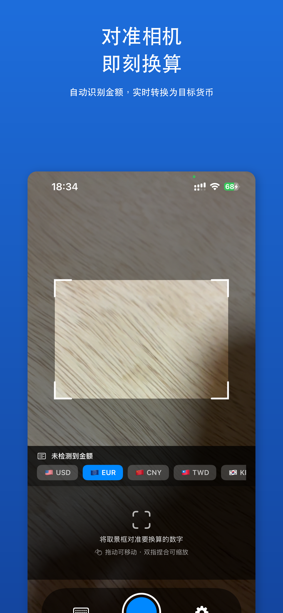
可以拖动取景框来调整位置，也可以用双指捏合放大或缩小。把想要识别的金额单独框起来，就能忽略周围无关的数字 — 在杂乱的菜单和收据上特别好用。
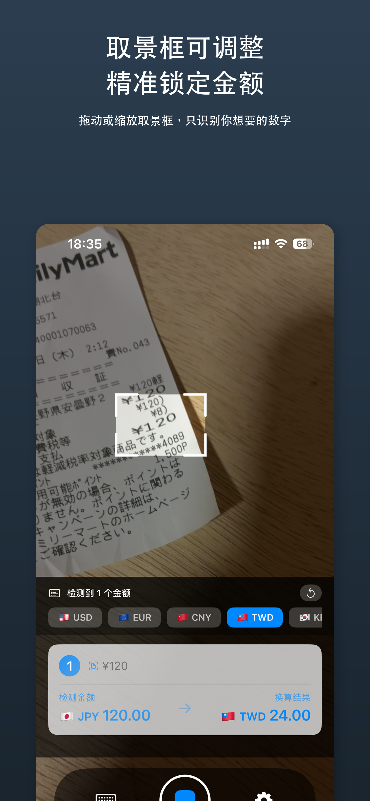
点击底部中央的相机按钮可以冻结当前画面，方便你仔细查看识别到的金额。再次点击可恢复实时检测。
点击左上角的键盘图标进入手动输入模式。使用系统键盘输入金额，即可看到所有目标货币的实时换算结果。适合不方便使用相机的场景。
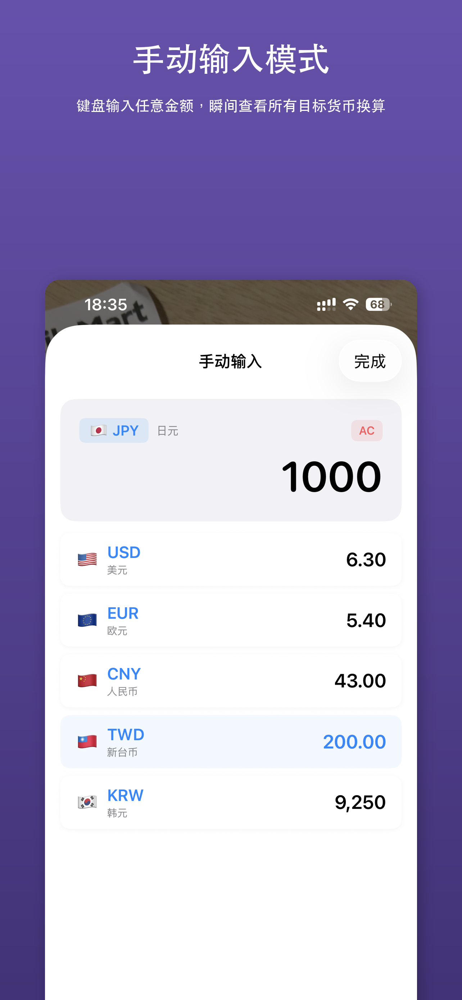
如果你设置了多个目标货币，可以使用主界面底部的货币标签快速切换。
点击右上角的齿轮图标（⚙）打开设置。在这里你可以配置源货币、目标货币和汇率。
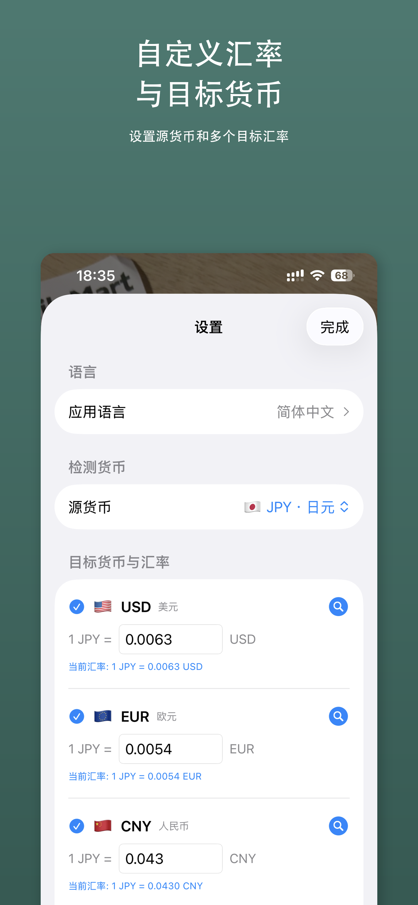
在"检测货币"部分，选择你期望通过相机看到的货币。例如，如果你在日本旅行，设置为 JPY。
点击"添加货币"打开货币选择器。货币按地区分组显示（亚太、大洋洲、美洲、欧洲、中东与非洲），轻点即可批量选择，"清空"按钮一键清除，也可按名称或代码搜索。长按列表中的货币可自由排序，左滑删除。
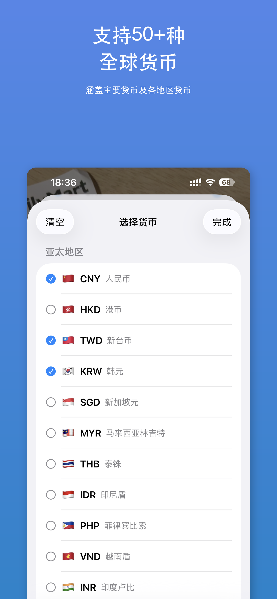
每个目标货币都有可编辑的汇率输入框。你可以输入自己的汇率，也可以点击放大镜图标在线查询最新汇率。
进入设置 > 应用语言，可以在英语、日语、韩语、简体中文、繁体中文和西班牙语之间切换。
小技巧：应用会按源货币分别记忆你的目标货币选择。当你从 JPY 切换到 EUR 作为源货币时，对应的目标货币列表也会自动切换！
首次開啟匯率相機時，應用程式會請求相機權限。點擊「允許」以啟用即時貨幣辨識。相機僅用於裝置端文字辨識，不會儲存或上傳任何影像。
將螢幕上的取景框對準任何價標、收據、菜單或標示上的金額。應用程式會自動辨識取景框內的數字，並在螢幕底部顯示換算結果。
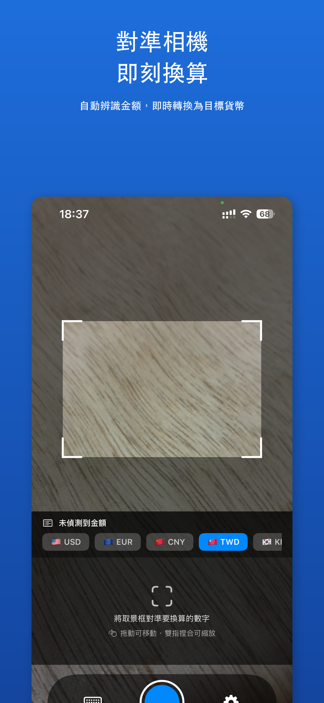
可以拖曳取景框調整位置，也可以用雙指捏合放大或縮小。把想要辨識的金額單獨框起來，就能忽略周圍無關的數字 — 在雜亂的菜單與收據上特別好用。
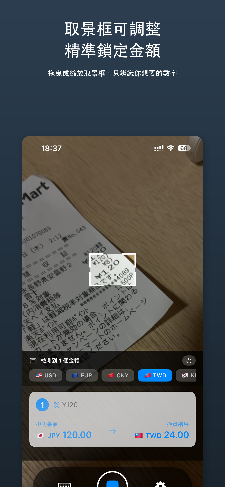
點擊底部中央的相機按鈕可以凍結當前畫面，方便你仔細查看辨識到的金額。再次點擊可恢復即時偵測。
點擊左上角的鍵盤圖示進入手動輸入模式。使用系統鍵盤輸入金額，即可看到所有目標貨幣的即時換算結果。適合不方便使用相機的場景。
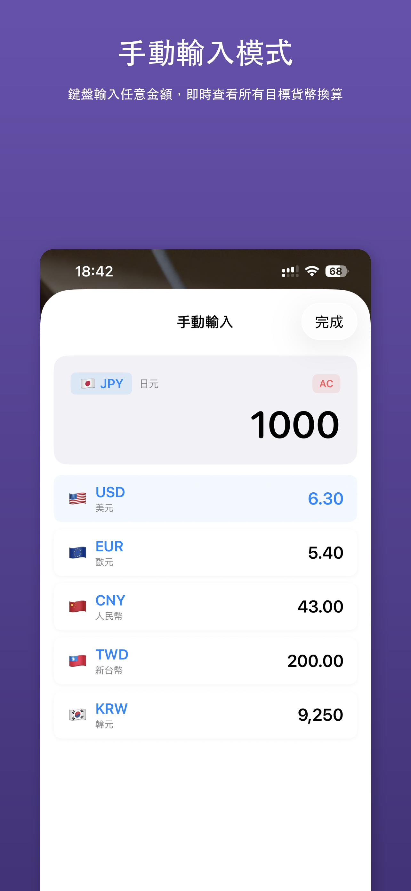
如果你設定了多個目標貨幣，可以使用主畫面底部的貨幣標籤快速切換。
點擊右上角的齒輪圖示（⚙）開啟設定。在這裡你可以設定來源貨幣、目標貨幣和匯率。
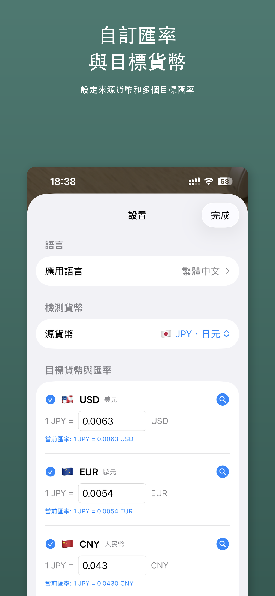
在「偵測貨幣」部分，選擇你期望透過相機看到的貨幣。例如，如果你在日本旅行，設定為 JPY。
點擊「新增貨幣」開啟貨幣選擇器。貨幣依地區分組顯示（亞太、大洋洲、美洲、歐洲、中東與非洲），輕點即可批次選擇，「清空」按鈕一鍵清除，也可依名稱或代碼搜尋。長按清單中的貨幣可自由排序，向左滑動刪除。
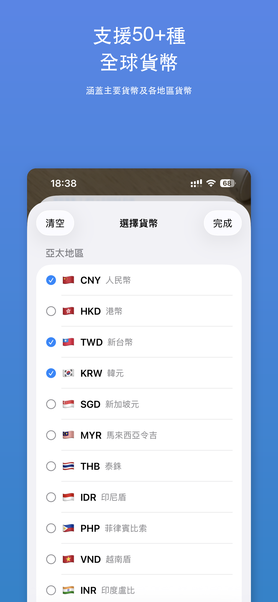
每個目標貨幣都有可編輯的匯率輸入框。你可以輸入自己的匯率，也可以點擊放大鏡圖示線上查詢最新匯率。
進入設定 > 應用程式語言，可以在英語、日語、韓語、簡體中文、繁體中文和西班牙語之間切換。
小技巧：應用程式會按來源貨幣分別記憶你的目標貨幣選擇。當你從 JPY 切換到 EUR 作為來源貨幣時，對應的目標貨幣清單也會自動切換！
Al abrir CámaraTasa por primera vez, la app solicitará permiso para usar la cámara. Toca "Permitir" para activar la detección de moneda en tiempo real. La cámara solo se usa para reconocimiento de texto en el dispositivo; no se almacenan ni suben imágenes.
Dirige el marco de enfoque en pantalla a cualquier etiqueta de precio, recibo, menú o cartel que muestre un monto. CámaraTasa detecta los números dentro del marco y muestra la conversión en la parte inferior.
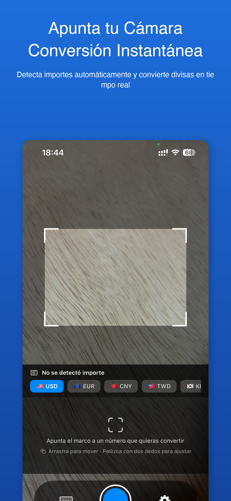
Arrastra el marco para moverlo, o pellízcalo con dos dedos para cambiar su tamaño. Ajusta el marco a un solo precio para que la app ignore los demás números a su alrededor — ideal en recibos y menús abarrotados.
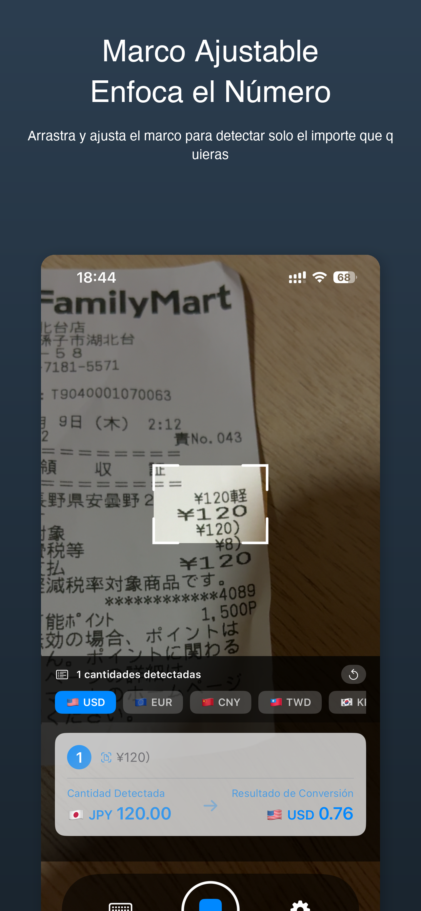
Toca el botón de cámara (centro inferior) para congelar la imagen actual. Así puedes examinar los montos detectados sin que la vista se actualice. Tócalo de nuevo para reanudar.
Toca el icono de teclado (arriba a la izquierda) para abrir el modo de entrada manual. Escribe cualquier monto con el teclado del sistema y verás las conversiones a todas tus monedas de destino al instante. Perfecto cuando no puedes apuntar la cámara.
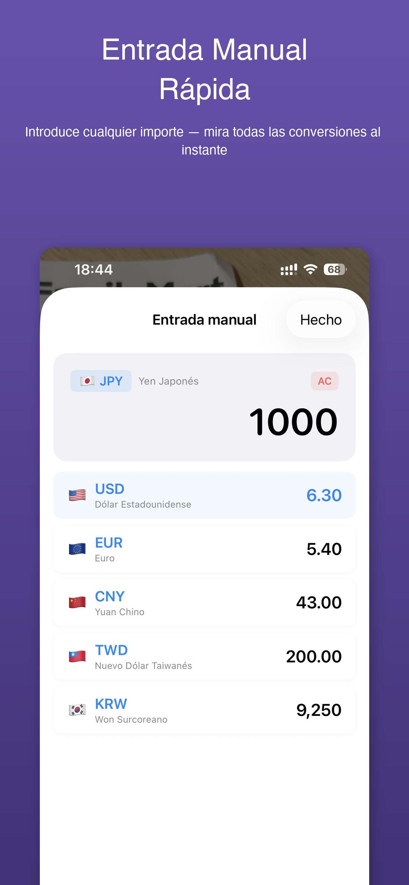
Si tienes múltiples monedas de destino configuradas, usa las pestañas de moneda en la parte inferior de la pantalla principal para cambiar rápidamente entre ellas.
Toca el icono de engranaje (⚙) en la esquina superior derecha para abrir Ajustes. Aquí puedes configurar tu moneda de origen, monedas de destino y tasas de cambio.
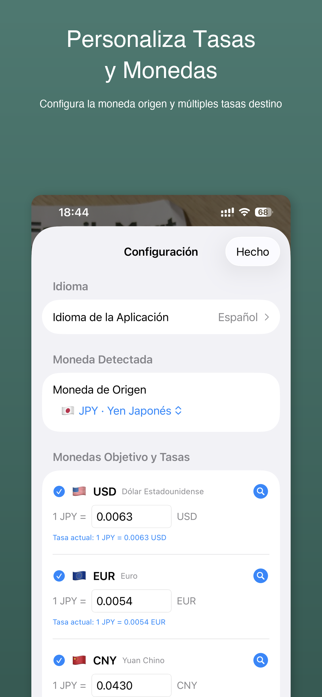
En "Moneda detectada", selecciona la moneda que esperas ver a través de la cámara. Por ejemplo, si estás viajando en Japón, configura JPY.
Toca "Agregar moneda" para abrir el selector. Las monedas están agrupadas por región (Asia-Pacífico, Oceanía, Américas, Europa, Oriente Medio y África): toca para seleccionar varias a la vez, usa "Borrar todo" para reiniciar y busca por nombre o código. Mantén presionada una moneda en la lista para reordenar, o desliza a la izquierda para eliminarla.
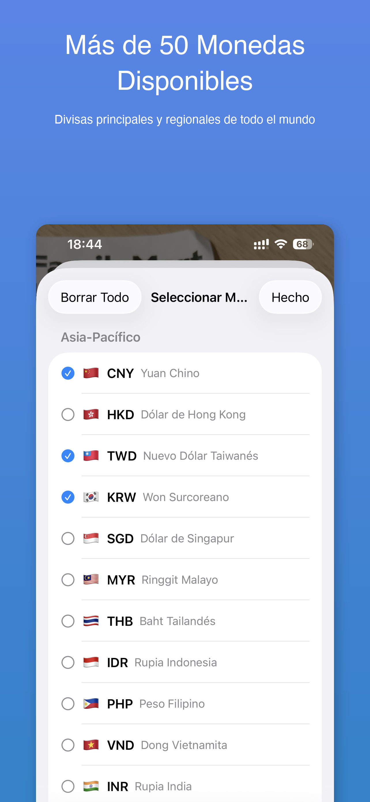
Cada moneda de destino tiene un campo de tasa editable. Puedes escribir tu propia tasa o tocar el icono de lupa para consultar la tasa actual en línea.
Ve a Ajustes > Idioma de la app para cambiar entre inglés, japonés, coreano, chino simplificado, chino tradicional y español.
Consejo: La app recuerda tu selección de monedas de destino por cada moneda de origen. Cuando cambias de JPY a EUR como moneda de origen, ¡tu lista de monedas de destino cambia automáticamente!
환율 카메라를 처음 실행하면 카메라 권한 요청이 표시됩니다. "허용"을 탭하여 실시간 통화 인식을 활성화하세요. 카메라는 기기 내 텍스트 인식에만 사용되며, 이미지는 저장되거나 업로드되지 않습니다.
화면의 스캔 프레임을 가격표, 영수증, 메뉴판, 간판 등 금액이 표시된 부분에 맞춰 보세요. 앱이 프레임 안의 숫자를 자동으로 인식하여 화면 하단에 환산 결과를 표시합니다.
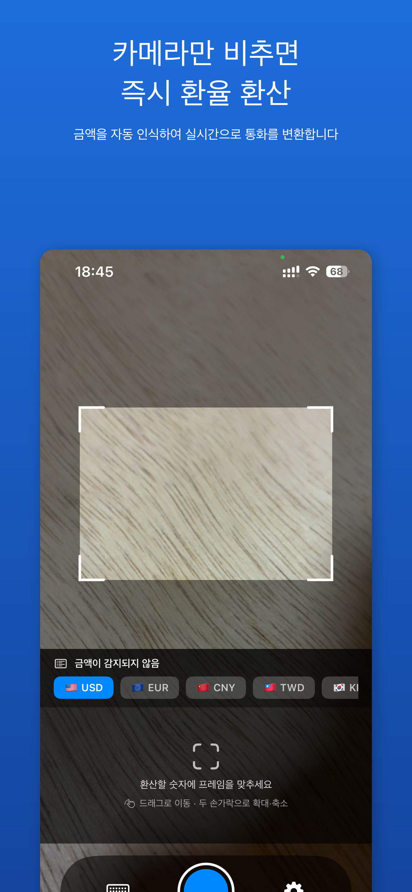
프레임을 드래그하여 위치를 옮기고, 두 손가락으로 핀치하여 크기를 조절할 수 있습니다. 원하는 금액만 프레임 안에 들어오게 하면 주변의 관련 없는 숫자는 무시됩니다 — 복잡한 영수증이나 메뉴판에서 특히 유용합니다.
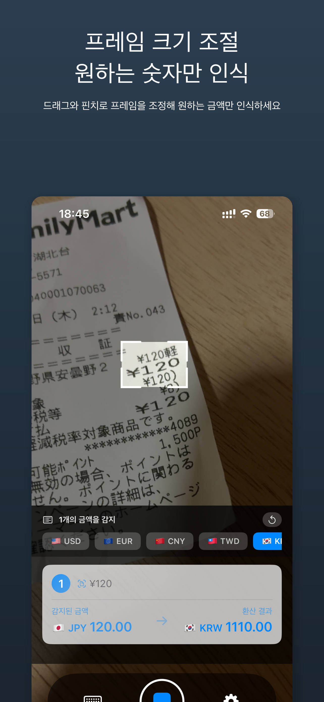
화면 하단 중앙의 카메라 버튼을 탭하면 현재 화면을 일시 정지할 수 있습니다. 화면이 계속 갱신되지 않아 인식된 금액을 차분히 확인할 수 있습니다. 다시 탭하면 실시간 인식이 재개됩니다.
왼쪽 상단의 키보드 아이콘을 탭하면 수동 입력 모드가 열립니다. 시스템 키보드로 금액을 입력하시면 모든 대상 통화로의 환산 결과가 즉시 표시됩니다. 카메라를 비출 수 없는 상황에 유용합니다.
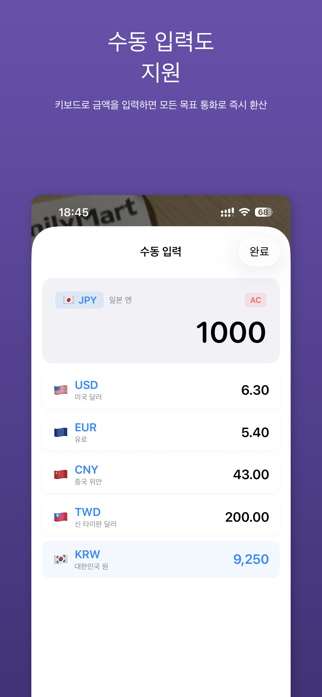
여러 대상 통화를 설정한 경우, 메인 화면 하단의 통화 탭을 사용하여 빠르게 전환할 수 있습니다.
오른쪽 상단의 톱니바퀴 아이콘(⚙)을 탭하여 설정을 여세요. 여기에서 원본 통화, 대상 통화, 환율을 설정할 수 있습니다.
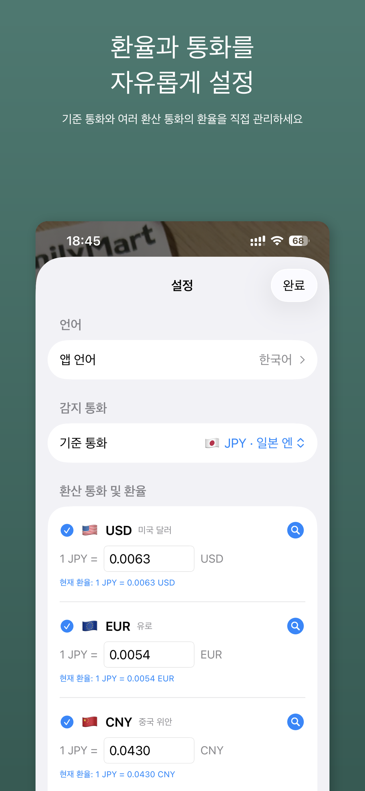
"인식 통화" 섹션에서 카메라로 인식하려는 통화를 선택하세요. 예를 들어 일본을 여행 중이라면 JPY로 설정합니다.
"통화 추가"를 탭하면 통화 선택 화면이 열립니다. 통화는 지역별(아시아-태평양, 오세아니아, 아메리카, 유럽, 중동·아프리카)로 그룹화되어 있으며, 탭하여 여러 개를 한 번에 선택할 수 있고, "모두 지우기"로 초기화하거나 이름·코드로 검색할 수 있습니다. 목록에서 길게 눌러 순서를 변경하거나 왼쪽으로 밀어 삭제할 수 있습니다.
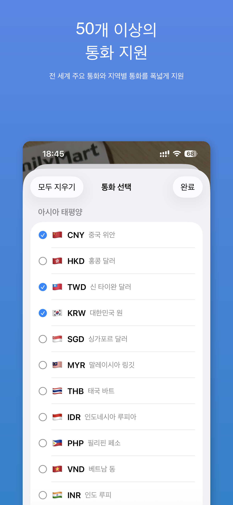
각 대상 통화에는 편집 가능한 환율 입력란이 있습니다. 원하는 환율을 직접 입력하시거나 돋보기 아이콘을 탭하여 현재 환율을 온라인으로 조회할 수 있습니다.
설정 > 앱 언어에서 영어, 일본어, 한국어, 중국어 간체, 중국어 번체, 스페인어 간에 전환할 수 있습니다.
유용한 팁: 앱은 원본 통화별로 대상 통화 선택을 기억합니다. 원본 통화를 JPY에서 EUR로 전환하면, 각각에 해당하는 대상 통화 목록이 자동으로 바뀝니다!